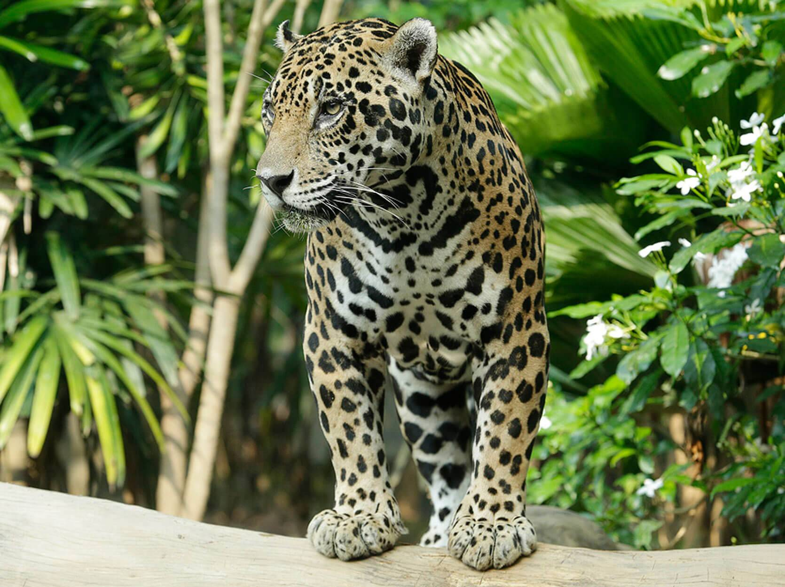
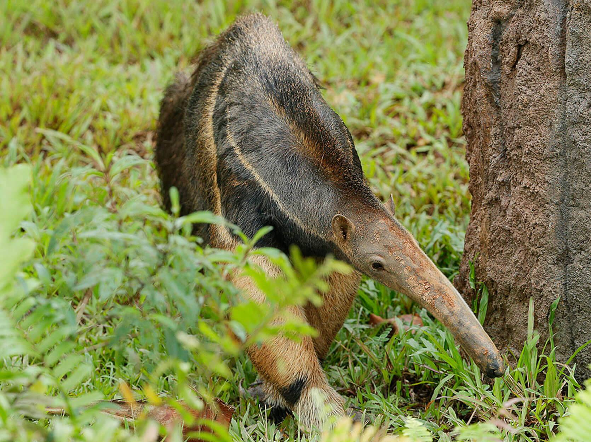

Amazon River Quest
 width="550" height"350"
width="550" height"350"
Embark on an unforgettable boat adventure into a mysterious river wilderness. Designed to simulate a journey along the Amazon River, be ready to spot our well-camouflaged and elusive wildlife among lush vegetation for a unique perspective of Amazonian wildlife.
Amazon River Quest tickets available for online purchase only at $5 per rider.
*Last ride is at 6.00pm. Riders must be at least 1.06m.
Click here to purchase tickets
Spot these animals.
Be enthralled by the sights and sounds of animals hailing from one of the most diverse rainforest habitats in the world!
 width="550" height"350"
width="550" height"350"
Brazilian Tapir
Almost always found near water, this species of tapir is fast on land – and even faster in the water. Its multipurpose snout doubles up as a snorkel, helping the animal to stay submerged for hours.
width="550" height"350"Jaguar
In Amazon River Quest, be transported into a dark cave where you’ll get to encounter a spotted predator in the form of the jaguar. This stealthy cat is an excellent swimmer and is perfectly capable of carrying large prey even while swimming.
width="550" height"350"Giant Anteater
With its distinct narrow head, bushy tail and long snout, it's almost impossible to miss the giant anteater. As it shuffles around searching for food, the giant anteater uses its long and narrow tongue to lap up ants and termites from ant mounds.
Considerations
Height restrictions: Children who are 1.06m and taller are welcome to embark on Amazon River Quest. A child swap procedure is in place such that a supervising adult and the child can wait while the others go on the boat ride. The supervising adult can board the boat once the others return.
Weather: Rain’s no fun. For this reason, we may suspend Amazon River Quest if the weather affects our visitors’ safety and comfort. Please note that ride tickets will not be replaced in the event of ride suspensions, and admission tickets sold can’t be refunded.